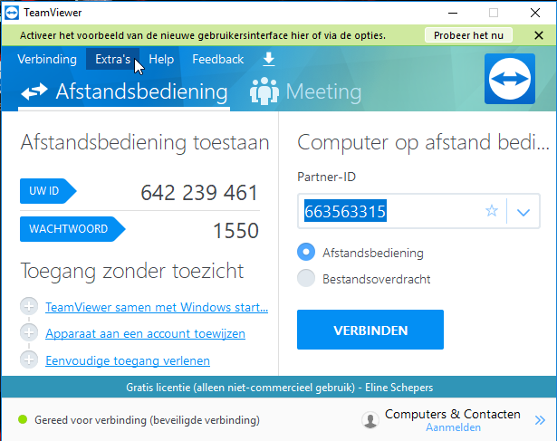
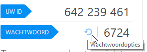
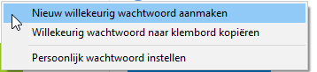
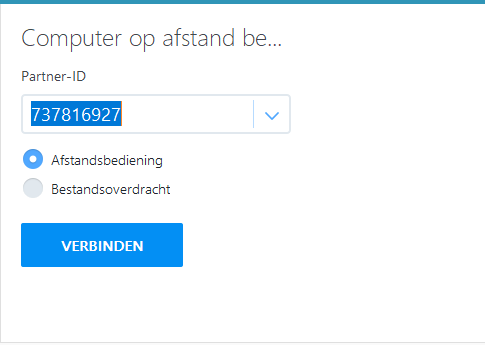
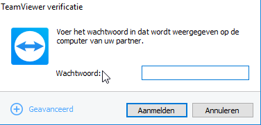

TAAK: Testopstelling remote management
een kort overzicht van zoveel mogelijk manieren die ik ken om remote servers (of apparaten) te beheren.
- Bomgar
- Team Viewer
- IslOnline
- Microsoft-Intune
- ADManagerPlus
- SolarWinds
- Power Admin
- Zedsphere NinjaRMM
- eset
Team Viewer
In het beginvenster (foto hieronder) kunt u uw id aflezen en uw wachtwoord. Deze zijn nodig om verbinding te maken met een ander apparaat. Wat u ook nodig heeft is het ID en het wachtwoord van het toestel op afstand.
Het is belangrijk om vaak genoeg je wachtwoord te veranderen. Zo voorkom je dat er ongewenst mensen op je pc kunnen. U kan uw wachtwoord snel veranderen door op de knop ‘wachtwoordopties’ te klikken.
en vervolgens op de optie ‘nieuw willekeurig wachtwoord aanmaken’ te klikken.
Een andere optie is dat je een persoonlijk wachtwoord aanmaakt via ‘persoonlijk wachtwoord instellen’.
Er zijn nog enkele opties die teamviewer geeft. ‘TeamViewer samen met Windows starten’ hierbij geef je teamviewer de
toestemming om samen met Windows op te starten. Je hebt ook de keuze om een apparaat aan een account toe te
wijzen dat wil met andere woorden zeggen dat het apparaat aan een Teamviewer-account wordt verwijst
om het apparaat op afstand te monitoren en beheren.
verbinding maken met een apparaat
→ zorg ervoor dat zowel uw apparaat als het apparaat waar u verbinding mee wilt maken uitgerust zijn met TeamViewer.
1. typ het Partner-ID van het apparaat waar u verbinding mee wil maken in. Vink ook ‘afstandsbediening’ aan. Dit wil zeggen dat u vanaf uw eigen apparaat het andere apparaat gaat raadplegen.
2. voer het wachtwoord van het andere apparaat in en klik op ‘Aanmelden’.
U bent nu verbonden met het apparaat.